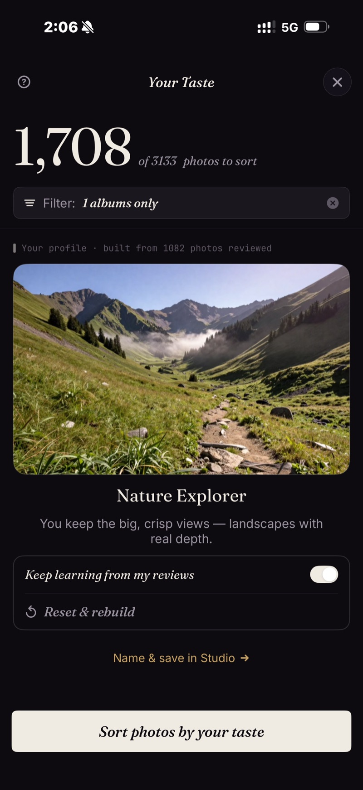
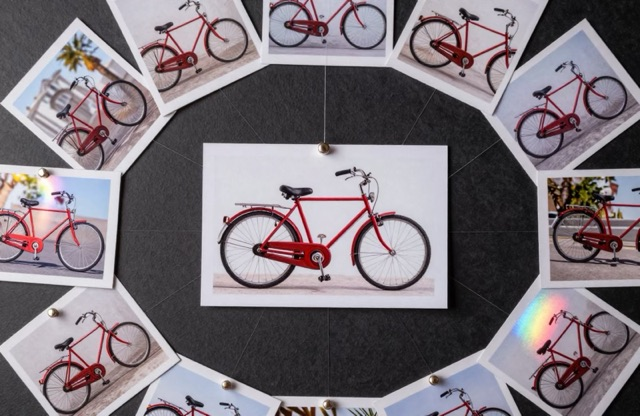
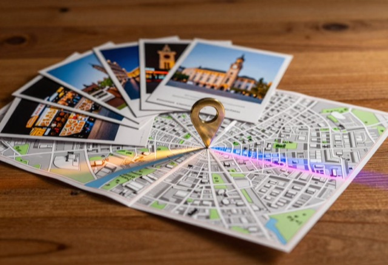

Your best photos. Found.
Most photo apps ask “is this a good photo?” SpectraSort asks “would you keep it?” Every time you keep or reject a photo, it learns — and your camera roll comes back ranked, winners first.
It learns what you'd have picked.
Every review teaches it. The app builds a personalized profile around your taste. What it picks starts to look like what you'd have picked yourself.
Pause its learning, reset it, or sharpen it. Save as many profiles as you like.



Your taste profile learns what you pick, then sorts your photos that way.
Six ways in. One tap each.





Search anything — and get it back best-first.
"Roses" works. "Dogs at the beach" works. "Cozy" works. Type a theme, every shot lands in one grid — ranked, not just found.
Pick one photo, find the rest.
Pick one photo and get back others like it, ranked most similar first.


11 shots of the same sunset → one swipe keeps the sharpest.
Duplicates, bursts and near-identical shots arrive already grouped, so you pick the one you like and move on.
Face the library one piece at a time.
Scenes gather your trips, themes and series on their own. A Timeline takes you through your days, months and years. How the organizing works →


Swipe the winners in. Finish in one screen.
Best rise to the top. Right to pick, down to keep, left to let go. Use the wheel to compare similar photos.
When you want the controls.
Seven quality axes to adjust. Up to three subjects. A balance wheel to trade subject match against quality. Bookmark as customized sort profiles.
Nothing leaves your phone.
Search, scoring and your taste profile all run on your phone. Your photos are never uploaded anywhere.
Four jobs. One app.
The captures on this page and in the guides are real sorts, not mockups: 1,708 photos ranked against one example, a taste profile built from 1,082 reviews, and a 650-photo cull that ended 4 picked, 484 kept, 162 let go.
1,200 vacation photos → the album worth showing
Point a sort at the trip and review the winners instead of swiping through every take. Duplicates and bursts come pre-stacked, so each moment is one decision.
How photo culling works on iPhone → Find old favoritesThe photo you know exists, but can't find
Describe it in words, or point at a photo like it. Matches come back ranked best-first, including ones buried three years deep.
How to find your best photos → Clear duplicates19 versions of the same shot, one keeper
Exact duplicates, bursts and near-identical takes come grouped, with the sharpest flagged. In the demo library one rose turned up 19 times; one decision settled the whole stack.
How the duplicate finder works → Build your collectionA camera roll that learns what you like
Every keep and reject sharpens your taste profile. After a while, sorting by Your Taste starts producing the album you'd have hand-picked.
What an AI photo picker does →Try it free. Keep it for $19.99, once.
- Not a trial — five sorts a week, forever
- No account, no credit card
- Saving, sharing and deleting — unlimited
- Your photos stay on your phone
iPhone · iOS 18.5+
- Unlimited sorts
- Studio's full controls — seven quality axes, the balance wheel, saved profiles
- One purchase, tied to your Apple account — restores on a new phone
- No subscription. Ever.
Built by an indie dev who uses it daily. Upgrade inside the app whenever the free tier feels small.